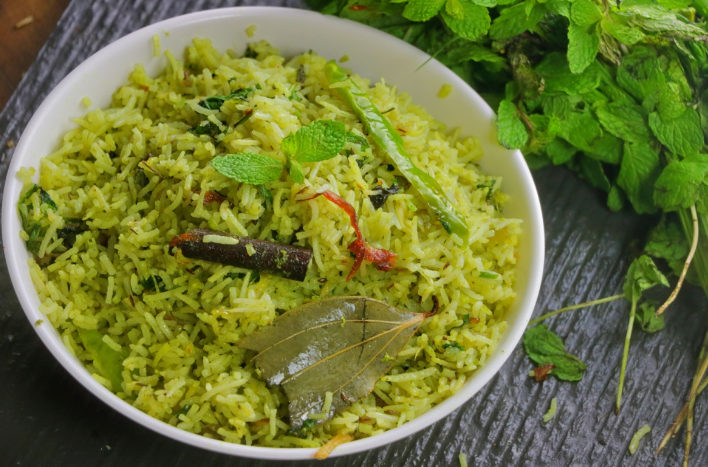

Mint Rice
Ingredients
- 1 cup basmati rice
- 1/2 cup fresh mint leaves, finely chopped
- 1 onion, sliced
- 2 green chilies, slit
- 1 teaspoon cumin seeds
- 1 bay leaf
- 2 tablespoons oil or ghee
- Salt to taste
- 2 cups water

Instructions
- Rinse the basmati rice under cold water until the water runs clear. Soak for 20-30 minutes, then drain.
- Heat oil or ghee in a pan over medium heat. Add the cumin seeds and bay leaf, and sauté for a few seconds until fragrant.
- Add the sliced onions and green chilies, and cook until the onions turn golden brown.
- Add the finely chopped mint leaves and cook for another minute.
- Add the soaked and drained rice to the pan, and stir gently to mix with the mint and onion mixture.
- Pour in 2 cups of water and add salt to taste. Bring to a boil, then reduce the heat to low, cover, and simmer for 15-20 minutes, or until the rice is cooked and water is absorbed.
- Remove from heat and let it sit, covered, for 5 minutes. Fluff the rice with a fork before serving.